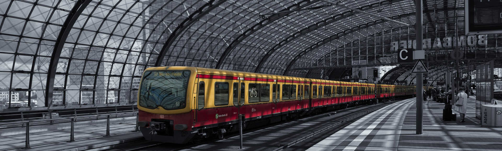

Maturité bilingue français – allemand
Bienvenue sur la page internet dédiée à la maturité bilingue français-allemand au Gymnase de Beaulieu. Vous y trouverez toutes les informations relatives à ce programme riche et motivant.
Site officiel de l’État de Vaud
- Inscriptions
- Condition d’accès au programme bilingue français – allemand
- Déroulement du programme de maturité bilingue français – allemand
- Les personnes de référence au Gymnase de Beaulieu et leurs mandats
- Quelques bonnes raisons pour choisir la maturité bilingue français – allemand
- Autres alternatives
- Foire Aux Questions

Conditions d’accès au programme bilingue français – allemand
Modalité C (immersion courte)
Les élèves qui souhaitent s’engager dans la modalité C et effectuer un séjour linguistique de 10 à 12 semaines doivent obtenir à la fin du 1er semestre un résultat égal ou supérieur à 42.5 points. Ils doivent par ailleurs obtenir au moins 13 points en additionnant les moyennes de français, mathématiques et option spécifique.
Modalité L (immersion longue)
Les élèves qui choisissent la modalité L et accomplissent ainsi une année complète dans un gymnase de langue allemande doivent obtenir, à la fin du 1er semestre de la première année, un résultat égal ou supérieur à 45 points. D’autre part, ils doivent obtenir au moins 13 points en additionnant les moyennes de français, mathématiques et option spécifique.
Déroulement du programme de maturité bilingue français-allemand
Deux modalités sont proposées aux élèves : la modalité C — par immersion courte — qui implique un séjour de trois mois dans un gymnase de langue allemande durant le dernier trimestre de la 1re année; et la modalité L — par immersion longue — qui implique la fréquentation d’un gymnase de langue allemande durant toute la 2e année.
Modalité C (immersion courte)
Les élèves qui choisissent la modalité C suivent les cours de 1re année jusqu’à la date de leur départ. A cette date, ils reçoivent un bulletin annuel établi spécialement à leur intention sur la base des notes acquises jusqu’à leur départ. Entre les vacances de Pâques et la fin de l’année scolaire déterminée par le calendrier du gymnase d’accueil, les élèves effectuent un séjour de 10 à 12 semaines dans un établissement de Suisse alémanique ou d’un autre pays de langue allemande.
Cette immersion permet à l’élève de faire la preuve de sa motivation et d’acquérir une maîtrise de la langue suffisante pour permettre ensuite son intégration efficace, dès le début de la 2e année, dans des cours donnés en allemand. De plus, le travail de maturité est rédigé en allemand.
Modalité L (immersion longue)
Les élèves qui choisissent cette modalité sont scolarisés en 1re année dans un gymnase vaudois en fonction de leurs différents choix en matière de disciplines fondamentales et d’options spécifiques. Ils accomplissent leur 2e année dans un gymnase de Suisse alémanique ou d’une autre région germanophone. Le travail de maturité est accompli en allemand. Pendant la 3e année suivie dans un gymnase vaudois, au moins une discipline est enseignée dans cette langue.
L’un des avantages de la modalité L est que l’élève a la certitude de fréquenter en 1re et en 3e année le même établissement.
La note de géographie, devant figurer sur le bulletin final de 3e année, s’acquiert en principe pendant la 2e année, dans l’établissement germanophone.
Les personnes de référence au Gymnase de Beaulieu et leurs mandats
Mme Kathrin Stadler-Comte, répondante pour la maturité bilingue français-allemand au Gymnase de Beaulieu :
- assure la promotion du programme ;
- rencontre les élèves intéressés au programme afin de leur donner des informations pratiques au sujet de ce cursus de formation ;
- place les élèves dans les gymnases partenaires ;
- assure le suivi des élèves durant leur séjour.
M. Enzo Santacroce, doyen responsable pour les maturités bilingues au Gymnase de Beaulieu :
- assure la promotion du programme de maturité bilingue français-allemand ;
- sélectionne les candidats sur la base de leurs résultats scolaires ;
- gère les aspects administratifs ;
- assure l’organisation des appuis bilingues en 3e année ;
- répond aux questions des élèves.
Quelques bonnes raisons pour choisir la maturité bilingue français – allemand
« La maîtrise de l’allemand reste très demandée par les entreprises suisses et internationales. Et, sans surprise, plusieurs professionnels du recrutement admettent que trouver des candidats parfaitement bilingues français-allemand devient très complexe. » (Magazine Bilan, mars 2016). Un premier élément de réponse pourrait se limiter à ces quelques lignes mais pas seulement…
Certaines filières de formation universitaire sont données exclusivement en allemand. C’est le cas notamment de l’école vétérinaire de Berne ou Zurich. Certaines écoles de renom se trouvent en terre alémanique comme HEC St-Gall ou l’EPFZ à Zurich. La maîtrise de la langue de Goethe est donc indispensable pour suivre ces cursus de formation. Après un séjour d’une année, l’étudiant revient avec un solide bagage linguistique.
De plus, en dépit des différences cantonales, le système suisse reste assez similaire d’une région à l’autre. Quant aux gymnases allemands, ceux-ci ont des points communs avec le système de formation helvétique. Le retour en troisième année, même s’il s’accompagne de mises à niveau dans certaines branches, est assez aisé.
Et pour terminer, toujours selon le magazine Bilan, « la perle rare est celui qui parle parfaitement le français et le suisse allemand. ». Alors pourquoi ne pas apprendre les deux langues en même temps ? Le fait de le faire pendant qu’on est jeune est également un argument de taille. On n’oubliera pas non plus l’expérience culturelle qui découle d’un tel séjour et qui transformera l’étudiant/e pour toujours.
Autres alternatives
Il existe, bien entendu, des alternatives à la maturité bilingue, qui, même si la bachelière/le bachelier n’obtient pas un certificat officiel portant la mention « maturité bilingue », lui permettront d’améliorer ses compétences langagières en allemand. Pour en savoir plus allez sur la page « Séjour Linguistiques »
Foire Aux Questions
Vous avez des questions concernant la maturité bilingue français-allemand ? Parcourez la liste des questions fréquemment posées à ce sujet (FAQ). Vous y trouverez de nombreuses réponses.
- Comment se déroule un séjour d’une année en Allemagne et plus particulièrement à Berlin ?
Voici quelques informations intéressantes et utiles que d’ancien·ne·s gymnasien·ne·s vaudoi·e·s ont répertorié sur leur blog suite à leur séjour à Berlin : https://unandevieaberlin.wordpress.com/2016/02/28/maturite-bilingue-systeme-scolaire/ - Dois-je impérativement avoir un logement avant de m’inscrire au programme de maturité bilingue français-allemand ?
Absolument pas. Si vous souhaitez prendre part au programme, il est impératif de vous y inscrire dans le délai fixé. Si vous vous inscrivez à la modalité C, vous avez jusqu’à la fin janvier de l’année scolaire en cours pour trouver un logement. Pour les candidat/e-s à la version longue (modalité L), le délai est fixé aux vacances de printemps. - Que faire si j’ai de la difficulté à trouver un logement ?
Vous pouvez vous adresser à certaines agences spécialisées qui vous aideront à trouver une famille. La répondante pour la maturité bilingue peut vous orienter dans vos démarches. L’échange entre deux partenaires reste une option assez intéressante du point de vue économique. - Combien coûte une année en Suisse alémanique, en Autriche ou en Allemagne ?
Le logement et la nourriture sur place restent un poste important du budget d’un élève en séjour linguistique. Il faut compter entre CHF 700.- et CHF 900.- pour une chambre (nourri et logé) dans une famille. A cela s’ajoutent les dépenses personnelles. Vous ne payez en revanche aucun écolage dans votre école d’accueil. En cas d’échange avec un partenaire, les frais sont en général moins élevés.
A titre de compensation cantonale, vous recevez un subside de CHF 1000.- pour une année scolaire (modalité L). Un montant de CHF 300.- vous sera versé pour un séjour de trois mois (modalité C). Pour ce faire, vous devez remplir le formulaire ad hoc et nous le retourner. Ce montant vous aidera à financer une partie de votre séjour. - Existe-t-il des aides financières ?
En plus de la compensation cantonale de CHF 300.- (modalité C) ou CHF 1000.- (modalité L), vous pouvez adresser une demande de bourse à l’Office Cantonal des Bourses d’Etudes.
Vous trouverez toutes les informations sur le site Internet du canton de Vaud. - Ai-je le choix de la destination et de la famille ?
Oui, le choix de la destination et de la famille est libre. Dès que l’adresse de la famille est connue, la répondante se charge de l’inscription dans un gymnase à proximité. - Que se passe-t-il si les programmes scolaires ne sont pas les mêmes ?
Il y aura indéniablement des différences entre les programmes scolaires. Cependant, à votre retour en troisième année, vous aurez droit à des cours d’appui organisés gracieusement par le Gymnase de Beaulieu. Le doyen responsable prendra contact avec vous en début d’année scolaire pour l’organisation de ceux-ci. - Dois-je rester en contact avec les enseignants du Gymnase de Beaulieu durant mon séjour ?
Dans la mesure du possible oui, même si parfois vous pouvez être amené-e à changer de classe à votre retour en 3e année. - A mon retour en 3e année, ai-je la certitude de regagner ma classe d’origine de première année ?
Non, car pour des raisons organisationnelles et afin de vous garantir un horaire décent, il est parfois plus simple de regrouper les élèves dans certaines classes. Cependant, vous êtes certain/e de pouvoir accomplir votre dernière année au Gymnase de Beaulieu. - Quels cours seront donnés en allemand en troisième année ?
Pour la modalité L, l’histoire et la philosophie, discipline cantonale, sont enseignées en allemand.
Pour la modalité C, en principe deux disciplines sont enseignées en allemand. - Que se passe-t-il si j’ai les points requis par le programme bilingue au semestre d’hiver, puis plus en fin d’année scolaire ?
Le processus de sélection s’arrête à la fin du premier semestre. Si à cette échéance vous obtenez les points nécessaires (45 et 13 points pour la modalité L ou 42.5 et 13 points pour la modalité C), vous êtes certain-e de pouvoir prendre part au cursus de formation bilingue en dépit d’une baisse de points en fin d’année. Cependant, vous devez réussir votre année scolaire aux conditions fixées pour tous les élèves de première année de l’école de maturité. Nous vous encourageons toutefois à maintenir vos points obtenus au 1er semestre afin d’assurer une rentrée en 3M sans trop de difficultés. - Que se passe-t-il si je n’ai pas les points au semestre pour la maturité bilingue mais que j’ai déjà trouvé la famille ?
Vous avez la possibilité de partir en séjour linguistique l’année suivante sans prendre part au programme bilingue. Vous prendrez donc une année de congé et vous reviendrez au Gymnase de Beaulieu en 2M l’année suivante. Vous devez préalablement demander l’accord de la direction par courrier. - Comment cela se passe-t-il avec mon Travail de Maturité durant mon séjour ?
Vous pouvez le faire dans votre gymnase d’accueil ou au Gymnase de Beaulieu. Dans ce cas, la défense aura lieu en décembre de l’année suivante. Si vous optez pour la première option, renseignez-vous préalablement auprès de votre nouvelle école. La répondante bilingue peut vous aider. - Que fait exactement la répondante bilingue ?
La répondante bilingue s’occupe de l’inscription dans un gymnase germanophone avant votre départ et peut vous guider pour la recherche d’une famille d’accueil. Elle ne fait toutefois pas office d’agence de placement. Elle peut vous mettre en contact avec d’autres élèves bilingues de troisième année si vous souhaitez leur adresser des questions. Lors de votre séjour, elle vous aidera en cas de problème et fera l’interlocutrice entre vous et votre école si besoin est. - Je suis mauvais en allemand mais désire néanmoins tenter l’expérience d’une maturité bilingue français-allemand. Est-ce possible ?
Dans la mesure où vous avez les points nécessaires pour partir, il n’y a pas de restriction. D’ailleurs, on ne demande pas une moyenne spécifique à atteindre en allemand pour effectuer une maturité bilingue. - Comment procéder si je souhaite participer à un échange durant mon année de maturité bilingue ?
Si vous optez pour un échange, il suffit de compléter les formulaires « échange » que vous pouvez télécharger sur notre site. Une fois remplis, vous les transmettez à la répondante qui enverra votre dossier au Bureau des échanges du Canton de Vaud. Il est important d’envoyer le dossier assez tôt, à savoir début octobre pour la modalité C ou en décembre pour la modalité L pour que le Bureau des échanges puisse vous trouver un/e partenaire adéquat/e. En principe, les échanges se font principalement avec la Suisse allemande car les partenaires en Allemagne sont très rares. En revanche, si vous voulez aller en Allemagne et accueillir un/e élève suisse allemand/e pendant votre séjour, vous pouvez également vous adresser au Bureau des Échanges. Mais à ce moment-là, c’est à vous de trouver une famille en Allemagne. - Durant mon séjour en 2e année dans mon gymnase d’accueil (modalité L), mes résultats sont mauvais durant le premier semestre. Que se passe-t-il ?
Dans tous les cas, seules les notes du 2e semestre de la 2M comptent pour la promotion en 3M. Cela vous laissera en principe le temps de vous adapter et de vous familiariser avec le nouveau contexte et surtout d’être plus à l’aise avec l’allemand pendant les cours.